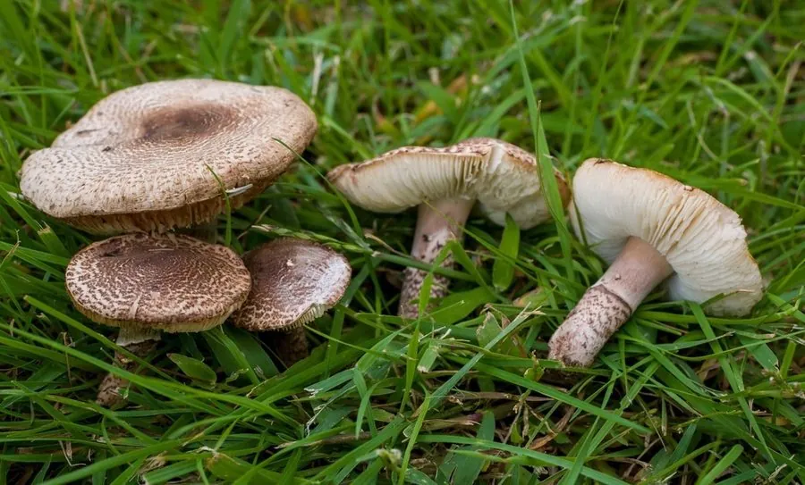

真菌 · 真菌界
肉褐鳞环柄菇 Lepiota brunneoincarnata

蘑菇科小型蘑菇，菌盖褐红底带同心鳞片，含鹅膏毒肽，属剧毒菌，误食可致肝衰竭死亡，禁止采食。
- 分类
- 门担子菌门纲伞菌纲目伞菌目科蘑菇科属环柄菇属
- 栖息环境
- 草地、林缘、公园与菜园，夏秋发生
- 地理分布
- 欧洲、亚洲温带分布，中国华北、华东及城市绿地有记录
- 保护级别
- 暂无评估；城市绿地种群较稳定
物种志
肉褐鳞环柄菇的子实体小型，菌盖直径 2–5 厘米，初期钟形，后平展，中央深褐红色，向边缘渐浅并裂成同心环状鳞片，露出白色菌肉，边缘有白色菌幕残片。菌肉白色，薄，气味微弱带果香。菌褶白色，离生，密集。菌柄长 2–5 厘米，直径 0.3–0.7 厘米，白色至淡粉褐，有易脱落的环状菌环，基部稍膨大。孢子印白色。
肉褐鳞环柄菇生于草地、林缘、公园与菜园，夏秋发生，常与可食的小型蘑菇混生。它含有鹅膏毒肽，属剧毒菌：误食后潜伏 6–24 小时，出现呕吐腹泻，随后进入假愈期，数日后肝肾功能衰竭，可致死。由于个体小、外形与某些可食小蘑菇相似，它是欧洲与中国报道的致命中毒种类之一。环柄菇属中含鹅膏毒肽的种类不止一种，因此该属小型蘑菇应一律不采食。
形态与习性
- 菌盖直径 2–5 厘米，褐红底带同心鳞片
- 菌褶白色，离生，密集
- 菌柄长 2–5 厘米，有易脱落菌环
- 孢子印白色，孢子椭圆形
- 毒性含鹅膏毒肽，可致肝衰竭死亡，禁止采食
- 风险个体小、与可食小蘑菇混生，极易误采
趣味知识
- 肉褐鳞环柄菇含鹅膏毒肽，毒性可与致命的鹅膏菌比肩，几朵就能致命。
- 它常长在公园草地、菜园边，与可食的小蘑菇混生，采菌人极易忽略。
- 中毒后有“假愈期”，胃肠症状缓解并不代表安全，肝损伤正在发生。
- 环柄菇属中不止一种含鹅膏毒肽，小型环柄菇应一律不采。